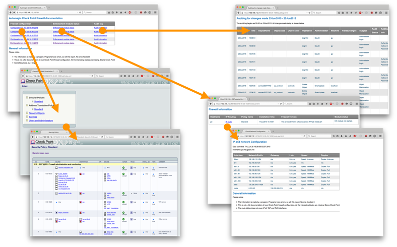
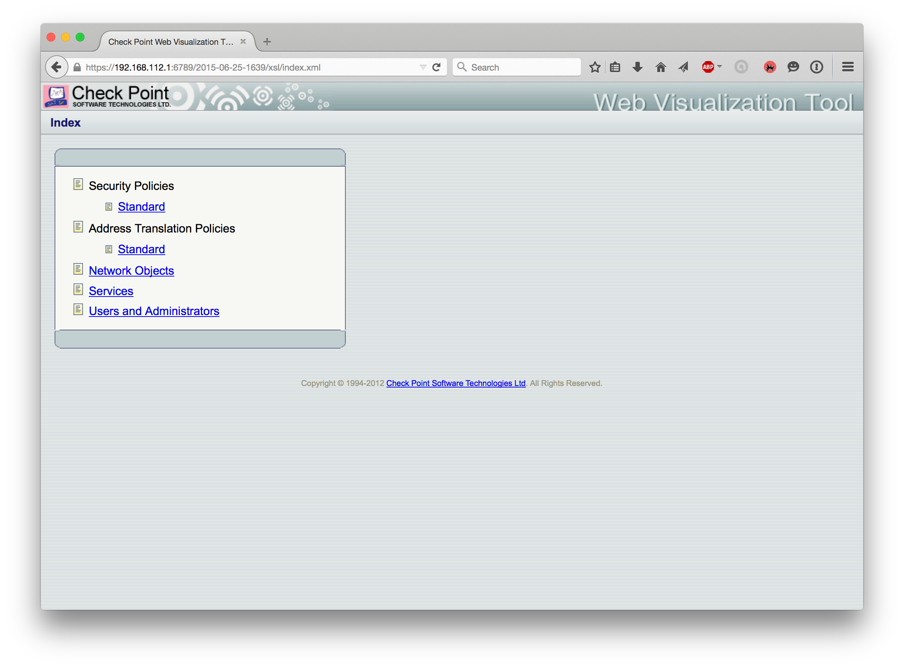
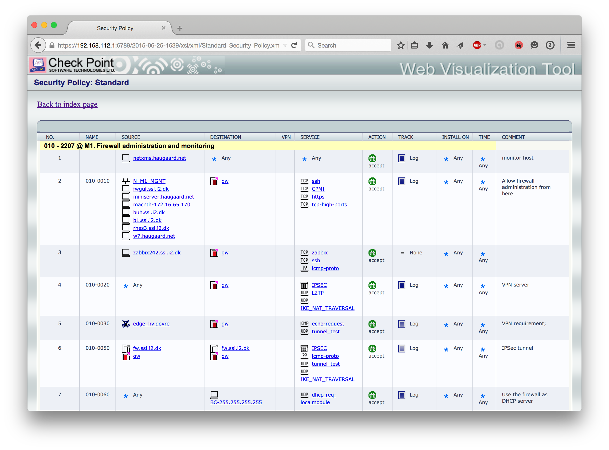
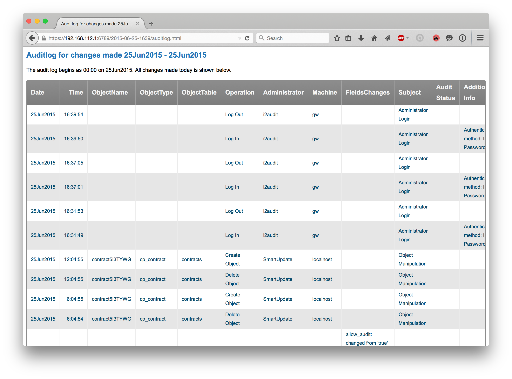
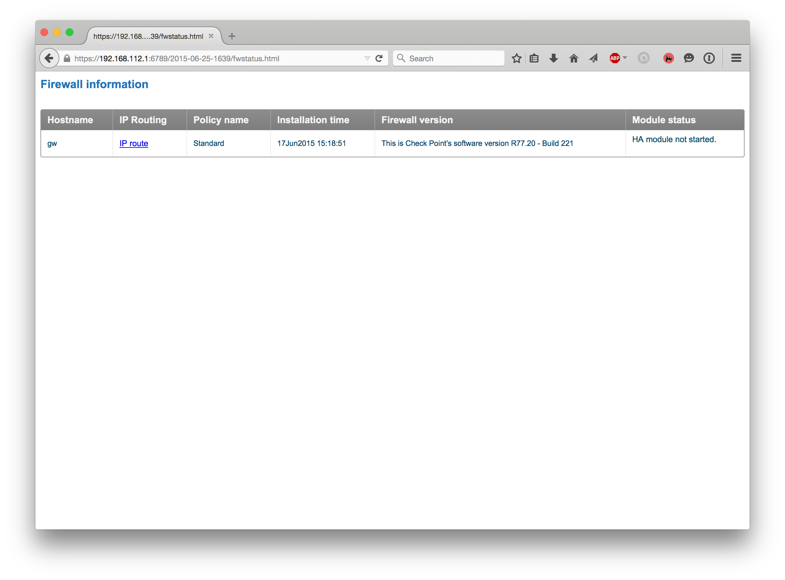
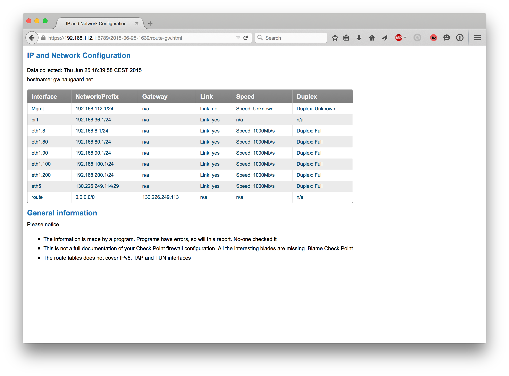

UNIfw1doc - UNI•C FireWall-1 automated documentation tool - is a simple automated firewall documentation tool for Check Point firewall-1 made by UNI•C.
UNIfw1doc version 1.0 is compatible with GAiA and has been tested on Check Point R77.10, R77.20 and R77.30, and should work with all later R77.x versions, both appliances and open servers.
UNIfw1doc should be installed on the management station. It uses Check Point’s Web visualization tool (SK64501) and a number of other utilities.
UNIfw1doc is free software and released under a modified BSD License, see LICENSE. Using the software requires a valid support contract with Check Point Technologies. UNIfw1doc is installed as an rpm package.
UNIfw1doc requires an application to render the Check Point configuration, and works with both cpdb2web from Check Point and CPrules. Either has to be installed separately, as described in the installation documentation.
Check Point cpdb2web may be download from supportcenter.checkpoint.com, search for sk64501 and download R77.x for Gaia / SecurePlatform / Linux.
cpdb2web does not require a separate license, but may fail to execute if an GUI is open.
Create the directory /var/opt/UNIfw1doc/cp_webviz_tool, unpack the archive
there with tar xvfpz cpdb2web*gz.
Notice the documentation created with cpdb2web requires Firefow for best viewing. (not html but xml files)
CPrules may be downloaded from here
Create the directory /var/opt/UNIfw1doc/CPrules, unpack CPRules.tar.gz and move all files
to /var/opt/UNIfw1doc/CPrules.
UNIfw1doc has two components:
Please notice that the documentation cannot be directly converted back to the firewall, and that all changes made within 15 min. is documented as one final change not a set of individual changes.
UNIfw1doc is a simple audit tool, visualizing information already available through the firewall GUI, while keeping track of historical changes. It is not a tool for roll-back. It processes the available information and relies on it. If you do not trust your firewall administrator UNIfw1doc will not help you.
UNIfw1doc is accessed though a browser with SSL on TCP port 6789 on the management station’s IP address:
https://a.b.c.d:6789
The server uses the firewall’s certificate (usually a self-signed SSL certificate which will cause a browser warning).
The main page shows documentation for each detected change, with the newest changes at the top. Each line in the table has tree links describing how the firewall was configured at a specific point in time.

The time stamp in the first column - Firewall configuration - links to a HTML version of the defined rule bases, with NAT, objects, users and administrators. The documentation is made with Check Point’s Web Visualization Tool (see SK64501).

The rule base may look like this example.

Configuration changes are tracked in the audit log, and the changes between different configurations are shown - exported to a HTML table.
The minimum audit time is one day.
The following information can usually be ignored:

The firewall status shows hostname, policy name, installation date, firewall software version, cluster status (for check point clusters) and a link to a page with the static routing.

Example of static routing on the enforcement modules.

/var/opt/UNIf1doc/etc/cp_httpd.confPlease contact fwsupport@i2.dk in case of problems.
UNI•C does not exist any more and the security devision has been transferred to DEiC/i2.dk logo and images has been updated accordingly together with new images showing cpdb2web not CPrules.